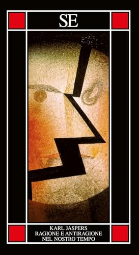
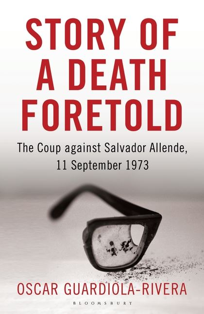
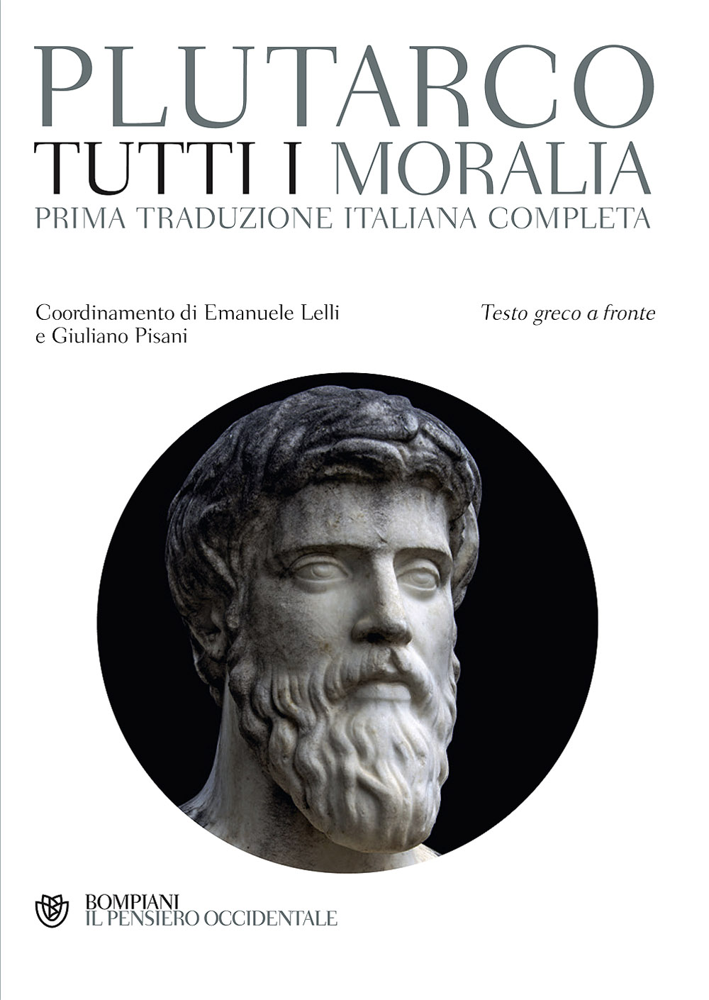
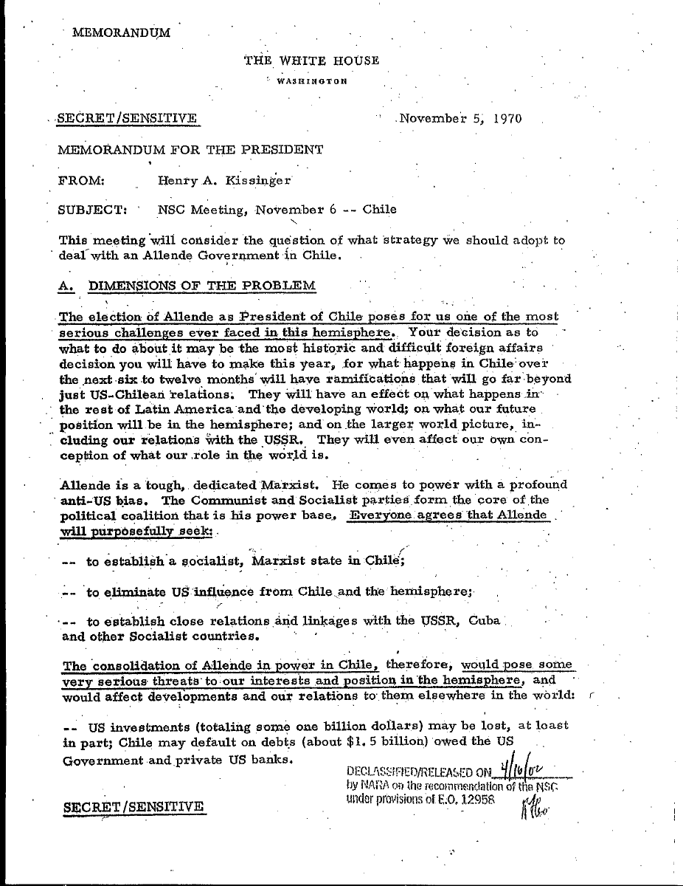
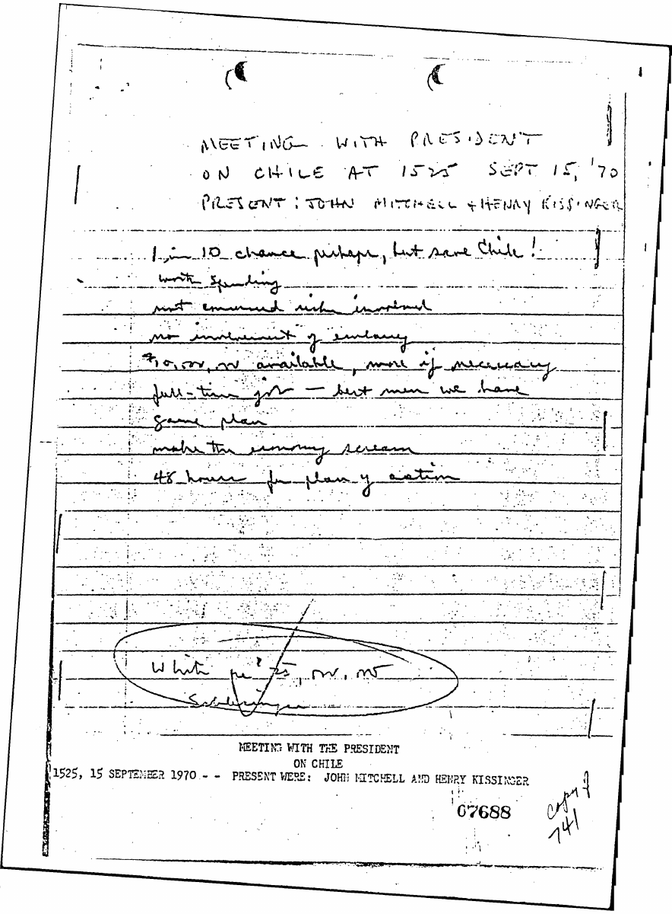
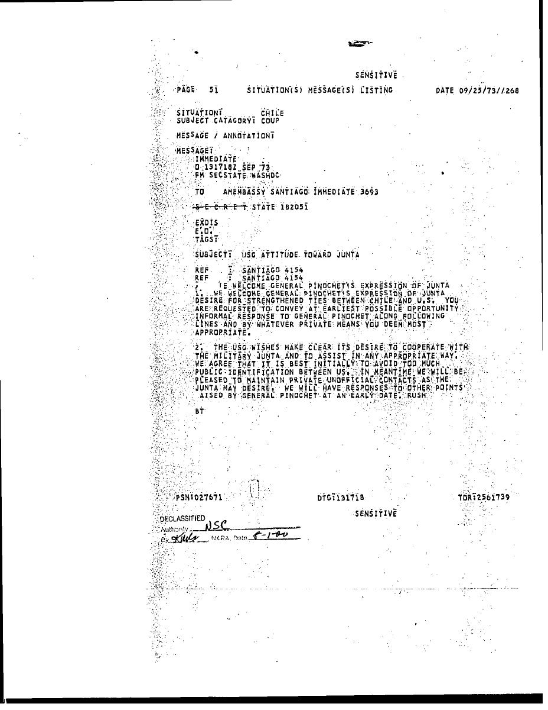
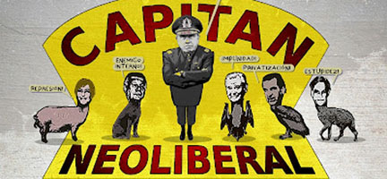

1:08:22 · 9 OPERE
Il colpo di Stato in Cile e la fine della democrazia.
Il filo del discorso
Caldarella ripercorre il colpo di Stato cileno attraverso due fili: la formazione culturale di Salvador Allende e la documentazione sulle politiche statunitensi verso il suo governo. Le pagine di Oscar Guardiola-Rivera su Juan De Marchi,il calzolaio che dialogava con il giovane Allende,offrono un’immagine del maestro come persona che rende accessibile la complessità. Da qui nasce una lunga riflessione su cultura popolare,scuola,ragione e libertà,le cui generalizzazioni restano attribuite al relatore. Gli appunti di Helms del15settembre1970,il memorandum Kissinger del5novembre e il telegramma statunitense alla giunta del13settembre1973 sono documenti distinti,confrontati con le fonti primarie. Seguono la repressione della DINA,i casi Letelier-Moffitt e Carmelo Soria e il problema dei rapporti internazionali del regime. La scheda precisa che La Moneda era sede dell’esecutivo,che il riesame forense2011 e la decisione giudiziaria2014 sostengono il suicidio di Allende e che arresti,tortura,morte ed esilio richiedono categorie separate. La critica degli interessi politici ed economici non trasforma incontri fotografati in prova automatica di ogni responsabilità né l’aspetto delle persone in diagnosi. Jaspers apre la domanda sulla ragione;Luciano chiude il discorso sulla finitezza del potere.
I libri nel discorso

Ragione e antiragione nel nostro tempo (Reason and Anti-Reason in Our Time)
Identificazione probabile
Copertina: SE · Piccola enciclopedia ·15luglio2025 · traduzioneGiulioSaccomanno · ISBN9788867239689
Copertina autentica dell’edizione italianaSE2025, acquisita tramite immagine pubblica indicizzata perISBN dopo il blocco della paginaIBS; titolo, KarlJaspers e marchioSE leggibili. Dati dell’edizione riscontrati nel catalogo. Edizione2025 illustrativa, non assegnata al video né fatta coincidere con l’originale1950 o l’inglese1952.
KarlJaspers nominato edepigrafe masse/maghi,Socrate/Platone riconoscibile nel testo inglese1952,p74. Titolo e traduzione non pronunciati,identificazione probabile; originale/traduzioni riscontrati nella bibliografiaStiftung.
Passaggio 0:21 ↗ · Fonti e libro ↗
La società del contrario
Copertina: Zambon · 2005
Copertina autentica dell’edizione di riferimento, controllata visivamente. Non identifica l’esemplare letto o citato nel video.
La società del contrario esplicita come proprio libro; anno ricordato vagamente,nessuna nuova edizione ricavata dal parlato.
Passaggio 11:22 ↗ · Fonti e libro ↗
Story of a Death Foretold: The Coup against Salvador Allende, 11 September 1973
Copertina: Bloomsbury ·2013 · copertina inglese con occhiale spezzato · ISBN9781408830086
Copertina autentica fornita dal CDN Bloomsbury per il volume2013: titolo, OscarGuardiola-Rivera e occhiale spezzato leggibili. La corrispondenza con la descrizione del video è forte; non si afferma di avere verificato visivamente la copia nel filmato. Il catalogo attualmente leggibile dell’eBookISBN9781408839898 documenta la stessa opera, con una diversa immagine; edizioni non duplicate.
Titolo resoStoria di una morte annunciata,occhiale spezzato e temaAllende. Catalogo e copertinaBloomsbury riscontrano opera e autore; non inventata una traduzione italiana pubblicata.
Passaggio 11:55 ↗ · Fonti e libro ↗
Moralia
Identificazione probabile
Copertina: Bompiani · Tutti i Moralia, 2017 · coordinamento Emanuele Lelli e Giuliano Pisani
Immagine autentica dell’opera, controllata visivamente; l’edizione di riferimento non è attribuita al filmato.
Fuoco da accendere invece di vaso da riempire: antecedente testuale riscontrato nelDeauditu48c,contenuto neiMoralia. Attribuzione oraleMontaigne/Socrate non certificata; riuso probabile della raccolta giàcensita,non aggiunti libri dai nomi.
Passaggio 28:05 ↗ · Fonti e libro ↗
NSC Meeting, November 6—Chile — memorandum del 5 novembre 1970
Copertina: WhiteHouse ·5novembre1970 · memorandum per il Presidente · pagina1 di8
Prima pagina autentica del memorandumKissinger, con intestazioneWhiteHouse,data,mittente,destinatario e oggetto. Rendering integrale fedele del documento declassificato,non copertina di un libro. Il numero6nell’oggetto è la data della riunione prevista,non la data del memorandum che è5novembre.
Memorandum5novembre1970 e passaggi letti espliciti,identificato comeNSCMeetingNovember6—Chile,FRUSXXI172. Consigliere sicurezza nazionale,non segretarioStato.
Passaggio 35:55 ↗ · Fonti e libro ↗
Meeting with the President on Chile — appunti del 15 settembre 1970
Copertina: RichardHelms ·15settembre1970 · prima pagina degli appunti manoscritti declassificati
Riproduzione integrale della prima pagina del PDF originale: manoscritto con intestazione, data, partecipanti e direttive. Non è una copertina libraria. Il PDF contiene due pagine della riproduzione, con apparato di trascrizione; soltanto l’immagine della prima è candidata pubblica.
RichardHelms e note della riunioneNixon15settembre1970 espliciti; manoscritto originale e FRUSXXI93 riscontrati. Distinto dal memorandum5novembre.
Passaggio 36:21 ↗ · Fonti e libro ↗
USG Attitude Toward Junta — telegramma STATE 182051 del 13 settembre 1973
Copertina: DepartmentofState ·STATE182051 ·13settembre1973 · riproduzione in listing datato25settembre1973
Pagina originale declassificata,integralmente rasterizzata: l’intestazione del listing reca09/25/73,mentre il testo interno del messaggio reca131718ZSEP73,STATE182051 e oggettoUSGAttitudeTowardJunta. Sono due date con funzioni diverse. Non è stato ritagliato il25né sostituito il13: la differenza è dichiarata per evitare un futuro doppione cronologico.
Lettura coincide conSTATE182051,USGAttitudeTowardJunta,13settembre1973. Il25settembre pronunciato è la data del listing,visibile in alto nella scansione; FRUSXXI350nota4 conferma data interna13settembre.
Passaggio 1:01:55 ↗ · Fonti e libro ↗
Chile: The first dictatorship of globalisation
Identificazione probabile
Copertina: LatinAmericaBureau ·11settembre2013 · illustrazione pubblicata con l’articolo
Illustrazione autentica collegata dalla pagina dell’articoloLAB: caricatura intitolataCapitánNeoliberal,conPinochet e figure simboliche. È dichiarata illustrazione dell’articolo,non fotografia documentaria, copertina libraria o prova delle responsabilità delle persone disegnate. Il linkRedPepper indicato dalla pagina reindirizza oggi alla homepage: non attribuita una diversa data iniziale non verificata.
Titolo reso in italiano prima dittatura della globalizzazione,riscontrato nell’articoloMikeGatehouse11settembre2013pressoLAB. Autore/testata non pronunciati,identificazione probabile.
Passaggio 1:04:50 ↗ · Fonti e libro ↗
Dialoghi dei morti
Copertina: Aurora Boreale · 2024 · introduzione di Nicola Bizzi
Immagine autentica dell’opera, controllata visivamente; l’edizione di riferimento non è attribuita al filmato.
Dialoghi dei morti diLuciano diSamosata espliciti; il tema è la finitezza delle pretese del potere. Nessun singolo dialogo o edizione assegnato.
Passaggio 1:07:55 ↗ · Fonti e libro ↗Minutaggi ricavati da testi automatici, da riascoltare. Le identificazioni probabili sono segnalate accanto ai libri.